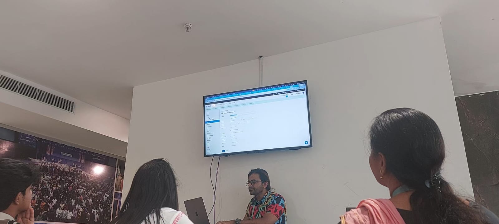
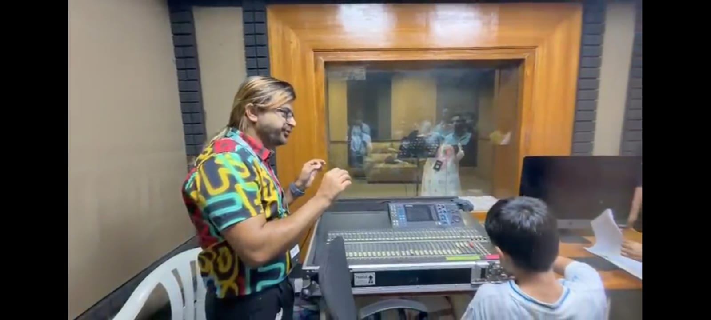

Matrimony App & Live Streaming
Building a church matrimony application and learning how live streaming works across multiple platforms simultaneously.
Overview
Today I have worked on building a matrimony application for NLAG church members as well as external users, specifically for Christians. The sir has divided us into three groups, and each group was responsible for designing a complete workflow covering both the frontend and backend of the application.
In a separate session, we also learned how live streaming works in a real setup. The sir has demonstrated how tools like Zoom and Vimeo can be used together to broadcast content across multiple platforms simultaneously. This helped me understand how large-scale streaming is managed efficiently.
What I Learned
- How to plan a full-stack matrimony application — covering both frontend design and backend data flow.
- How to design user workflows for a registration-to-matching process in a faith-based app context.
- How data collection, user interaction, and system logic are planned before any code is written.
- How live streaming platforms like Zoom and Vimeo can be used together to broadcast to multiple platforms at once.
- How large-scale streaming setups are managed efficiently in a real church environment.
What I Did
- Was divided into a group and assigned the task of designing a complete workflow for a matrimony application.
- Discussed how users would interact with the system — from registration to profile matching.
- Planned how data would be collected and how the overall frontend and backend would function together.
- Began working on building the matrimony app based on our proposed workflows.
- Attended a live streaming demo where the sir showed how Zoom and Vimeo are used together to broadcast across platforms.
Photos from Day 4

